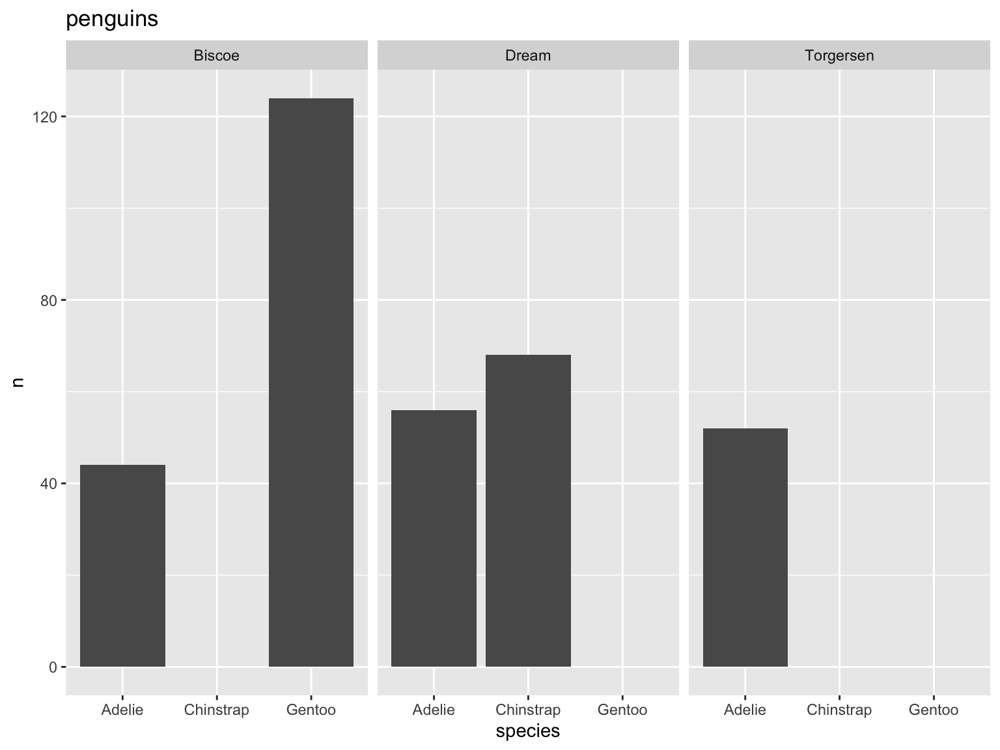
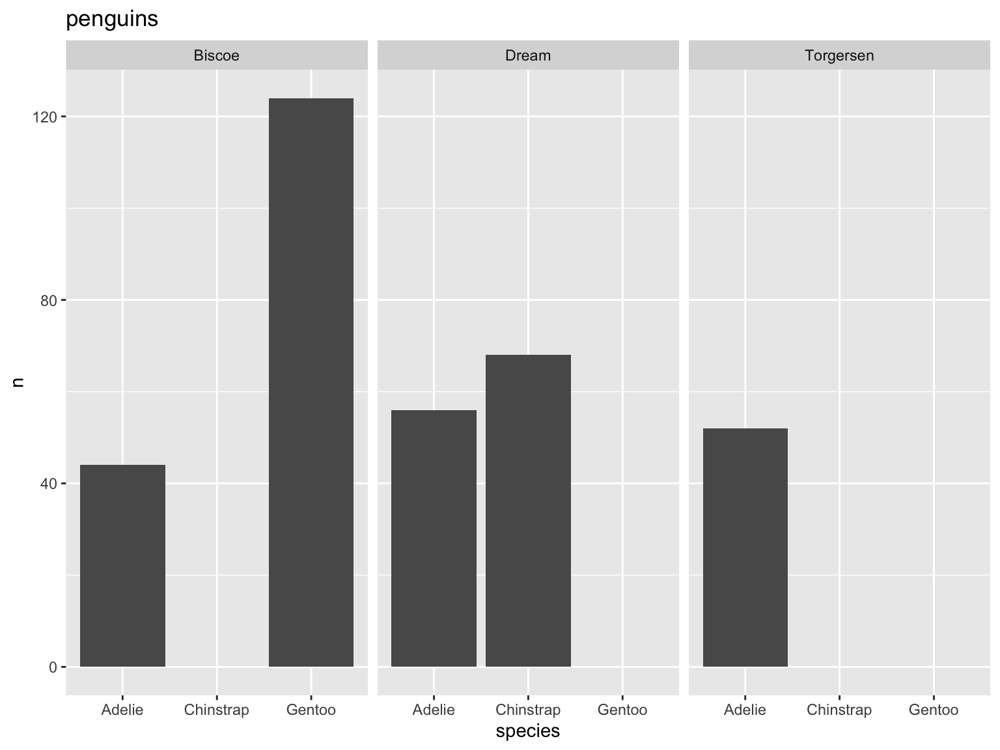
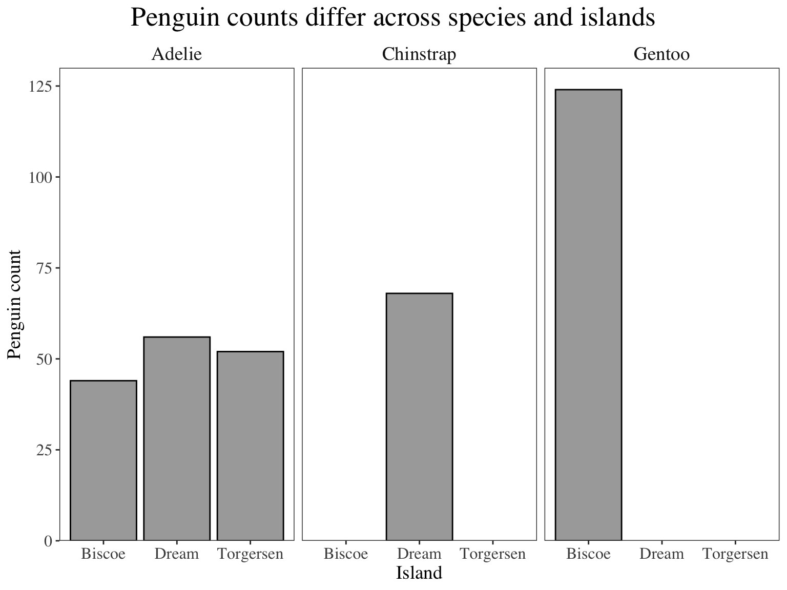
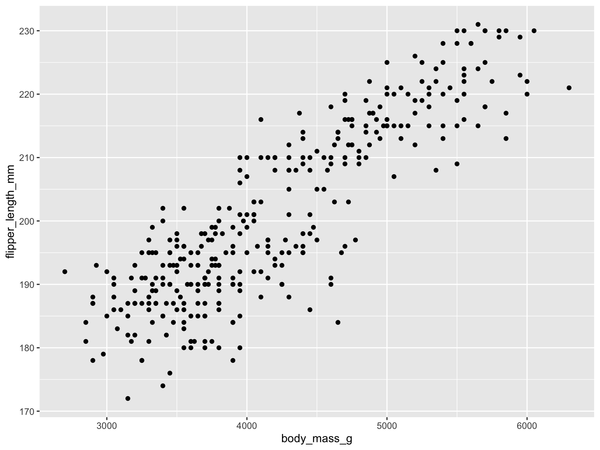
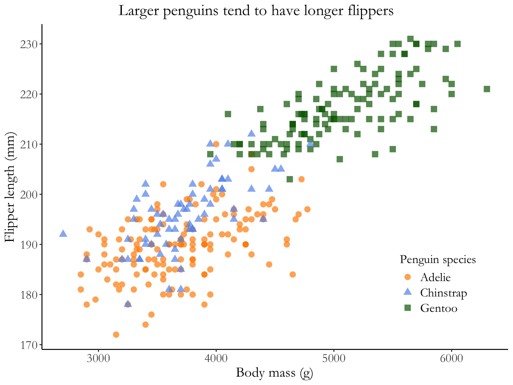
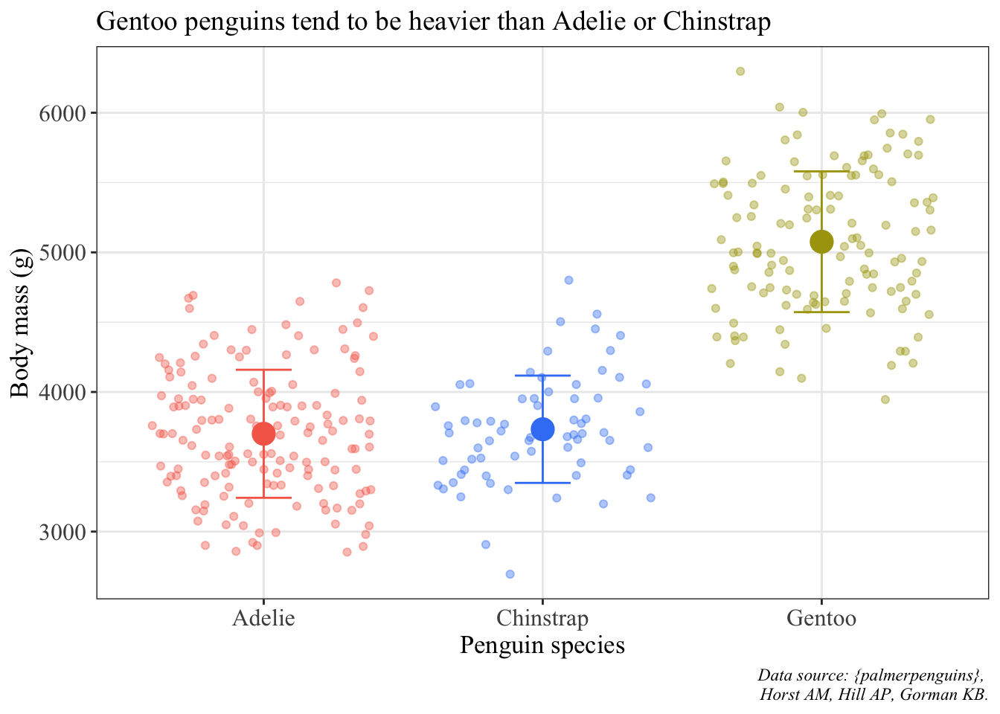

Code
penguins %>%
group_by(island, species) %>%
count() %>%
ggplot(aes(x = species, y = n)) +
geom_col() +
labs(title = "penguins") +
facet_wrap(~island)
Data visualization is a huge part of data storytelling, one of the core parts of being a data scientist. This is especially relevant to environmental science: you’re responsible for communicating not just about the environment, but what evidence (i.e. data) supports your claim. Therefore, it is crucial that environmental scientists communicate about their data clearly and effectively.
In this class, your plots will be assessed using three (very broad) criteria:
1. accuracy: is your plot accurately and truthfully representing the data?
2. clarity: is your plot clearly representing a pattern, relationship, message?
3. aesthetics: does your plot look good?
(adapted from Allison Horst)
ggplot, but you should double check)In general, the simpler you can make a plot, the better.
Some examples of bad and better plots follow using the {palmerpenguins} package.

Why is this bad?
- gap between bottom of bars and x-axis
- meaningless y axis
- gray background against gray bars and black text is hard to see
- gridlines don’t do much
penguins %>%
group_by(island, species) %>%
count() %>%
ggplot(aes(x = island, y = n)) +
# fill = fills in the shape, color = controls the outline
geom_col(fill = "darkgrey", color = "#000000") +
# expand takes away the gap at the bottom and at the top of the plot
# limits sets the limits of the axis
scale_y_continuous(expand = c(0, 0), limits = c(0, 130)) +
# change titles to be meaningful
labs(title = "Penguin counts differ across species and islands",
x = "Island",
y = "Penguin count") +
# one of the built-in themes in ggplot
theme_bw() +
theme(# changing text sizes
axis.text = element_text(size = 12),
axis.title = element_text(size = 14),
strip.text = element_text(size = 14),
# getting rid of gridlines
panel.grid = element_blank(),
# making the subplot titles (aka strips) have a transparent background
strip.background = element_blank(),
# making the plot title bigger and centering it
plot.title = element_text(size = 20, hjust = 0.5),
plot.title.position = "plot",
text = element_text(family = "Times")
) +
facet_wrap(~species)
Why is this better?
- text is bigger
- gridlines are gone
- easier to see columns agains background
- complete axes
- grayscale color scheme (good for printing out and paper reports in black and white)
Why is this bad?
- grey background, black dots
- hides some meaningful variation across species (for example, we know that Gentoo penguins tend to be bigger than Adelie and Chinstrap)
- axes are meaningless
- small text size
- points likely overlap, so some parts of the data are hidden
ggplot(penguins, aes(x = body_mass_g, y = flipper_length_mm, color = species, shape = species)) +
geom_point(size = 3, alpha = 0.7) +
# specify color scheme
scale_color_manual(values = c("darkorange", "cornflowerblue", "darkgreen")) +
# meaningful titles
labs(title = "Larger penguins tend to have longer flippers",
x = "Body mass (g)",
y = "Flipper length (mm)",
# have to specify color and shape separately (based on color and shape in aes() call)
color = "Penguin species", shape = "Penguin species") +
# another ggplot built-in theme
theme_classic() +
theme(# putting legend in plot area
legend.position = c(0.85, 0.2),
# legend text sizes
legend.text = element_text(size = 14),
legend.title = element_text(size = 14),
# text size, position, and font adjustment
axis.text = element_text(size = 14),
axis.title = element_text(size = 16),
plot.title = element_text(size = 18, hjust = 0.5),
plot.title.position = "plot",
text = element_text(family = "Garamond")
)
Why is this better?
- white background, no grid lines
- points are shaped and colored by species, so you can easily see the differences between groups
- transparency shows overlapping points
- complete axis labels
- text is larger and font is changed
- legend is in plot area (if there’s space to do this, generally good)
ggplot(data = penguins, aes(x = species, y = body_mass_g)) +
# fill the violin shape using the species column: every species has a different color
# alpha argument: makes the violin shape more transparent (scale of 0 to 1)
geom_violin(aes(fill = species), alpha = 0.5) +
# fill the boxplot shape using the species column
# make the boxplots narrower
geom_boxplot(aes(fill = species), width = 0.2) +
# specify the colors you want to use for each species
scale_fill_manual(values = c("#F56A56", "#3D83F5", "#A9A20B")) +
# relabel the axis titles, plot title, and caption
labs(x = "Penguin species", y = "Body mass (g)",
title = "Gentoo penguins tend to be heavier than Adelie or Chinstrap",
caption = "Data source: {palmerpenguins}, \n Horst AM, Hill AP, Gorman KB.") +
# themes built in to ggplot
theme_bw() +
# other theme adjustments
theme(legend.position = "none",
axis.title = element_text(size = 13),
axis.text = element_text(size = 12),
plot.title = element_text(size = 14),
plot.caption = element_text(face = "italic"),
text = element_text(family = "Times New Roman"))Warning: Removed 2 rows containing non-finite values (`stat_ydensity()`).Warning: Removed 2 rows containing non-finite values (`stat_boxplot()`).
# summarizing penguin data set: calculating mean and SD body mass by species
penguin_summary <- penguins %>%
group_by(species) %>%
summarize(mean_body_mass = mean(body_mass_g, na.rm = TRUE),
sd_body_mass = sd(body_mass_g, na.rm = TRUE))
ggplot() +
# using two different data frames: penguins (raw data) and penguins_summary (mean and SD)
# raw data are jittered
geom_jitter(data = penguins, aes(x = species, y = body_mass_g, color = species), alpha = 0.4) +
# summary data: mean is a point, bars are standard deviation
geom_point(data = penguin_summary, aes(x = species, y = mean_body_mass, color = species), size = 5) +
geom_errorbar(data = penguin_summary, aes(x = species, ymin = mean_body_mass - sd_body_mass, ymax = mean_body_mass + sd_body_mass, color = species), width = 0.2) +
scale_color_manual(values = c("#F56A56", "#3D83F5", "#A9A20B")) +
labs(x = "Penguin species", y = "Body mass (g)",
title = "Gentoo penguins tend to be heavier than Adelie or Chinstrap",
caption = "Data source: {palmerpenguins}, \n Horst AM, Hill AP, Gorman KB.") +
theme_bw() +
theme(legend.position = "none",
axis.title = element_text(size = 13),
axis.text = element_text(size = 12),
plot.title = element_text(size = 14),
plot.caption = element_text(face = "italic"),
text = element_text(family = "Times New Roman"))Warning: Removed 2 rows containing missing values (`geom_point()`).
```
@online{bui,
author = {Bui, An},
title = {Finalizing Plots},
url = {https://an-bui.github.io/ES-193DS-W23/resources/finalizing-plots.html},
langid = {en}
}